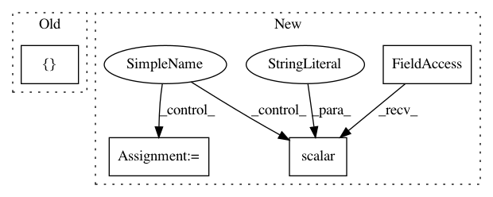

963710e3d38c9ad1d8b8cc1419a3bd1b3dddde1f,opennmt/utils/optim.py,,optimize,#Any#Any#Any#,90
Before Change
clip_gradients=clip_gradients,
learning_rate_decay_fn=decay_fn,
name="optim",
summaries=[
"learning_rate",
"global_gradient_norm",
],
colocate_gradients_with_ops=True)
def regularization_penalty(regularization_type, scale, weights_list=None):
After Change
start_decay_steps=params.get("start_decay_steps", 0),
minimum_learning_rate=params.get("minimum_learning_rate", 0))
learning_rate = decay_fn(learning_rate, global_step)
tf.summary.scalar("learning_rate", learning_rate)
// Optimizer.
optimizer_class = get_optimizer_class(params["optimizer"])
optimizer_params = params.get("optimizer_params", {})
if optimizer_class.__name__ == "AdafactorOptimizer":
optimizer = optimizers.get_adafactor_optimizer_from_params(
optimizer_class, optimizer_params, learning_rate=learning_rate)
else:
optimizer = optimizer_class(learning_rate, **optimizer_params)
if mixed_precision:
optimizer = optimizers.MixedPrecisionOptimizerWrapper(
optimizer, loss_scale=get_loss_scale_from_params(params))
// Gradients.
gradients = optimizer.compute_gradients(loss, colocate_gradients_with_ops=True)
_summarize_gradients_norm("global_norm/gradient_norm", gradients)
if "clip_gradients" in params:
gradients = _clip_gradients_by_norm(gradients, float(params["clip_gradients"]))
_summarize_gradients_norm("global_norm/clipped_gradient_norm", gradients)
return optimizer.apply_gradients(gradients, global_step=global_step)
In pattern: SUPERPATTERN
Frequency: 3
Non-data size: 4
Instances
Project Name: OpenNMT/OpenNMT-tf
Commit Name: 963710e3d38c9ad1d8b8cc1419a3bd1b3dddde1f
Time: 2018-11-09
Author: guillaumekln@users.noreply.github.com
File Name: opennmt/utils/optim.py
Class Name:
Method Name: optimize
Project Name: senarvi/theanolm
Commit Name: 5b261d143208c68182083052d8dade06102e1c7a
Time: 2016-04-27
Author: seppo.git@marjaniemi.com
File Name: theanolm/optimizers/basicoptimizer.py
Class Name: BasicOptimizer
Method Name: __init__
Project Name: arnomoonens/yarll
Commit Name: 86ce5d52134a56806112ff8664e4034338e0e05a
Time: 2019-03-21
Author: arno.moonens@gmail.com
File Name: yarll/agents/ppo/ppo.py
Class Name: PPO
Method Name: learn